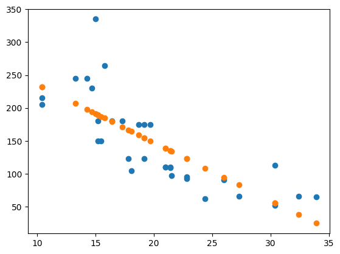

Model Complexity and Evaluation#
import matplotlib.pyplot as plt
import numpy as np
import pandas as pd
from sklearn.linear_model import LinearRegression
from sklearn.metrics import mean_squared_error
Polynomial Models#
Thus far, our regression models have taken the form:
where all our inputs to the model were linear.
In this notebook, we consider models of the form:
These are commonly referred to as Polynomial Regression Models – however we are still using Linear Regression because the unknown quantities – \(\beta\) – are linear.
#load in the cars data
cars = pd.read_csv('https://raw.githubusercontent.com/jfkoehler/nyu_bootcamp_spr26/main/data/mtcars.csv')
cars.head(2)
| Unnamed: 0 | mpg | cyl | disp | hp | drat | wt | qsec | vs | am | gear | carb | |
|---|---|---|---|---|---|---|---|---|---|---|---|---|
| 0 | Mazda RX4 | 21.0 | 6 | 160.0 | 110 | 3.9 | 2.620 | 16.46 | 0 | 1 | 4 | 4 |
| 1 | Mazda RX4 Wag | 21.0 | 6 | 160.0 | 110 | 3.9 | 2.875 | 17.02 | 0 | 1 | 4 | 4 |
#x = mpg and y = hp
X = cars[['mpg']]
y = cars['hp']
#scatter plot of x vs. y
plt.scatter(X, y)
<matplotlib.collections.PathCollection at 0x138bb23c0>

Reminder on Least Squares#
Assumptions of the model
The relationship between features and target are linear in nature
The features are independent of one another
The errors are normally distributed
The residuals have constant variance across all feature values
#fit model
lr = LinearRegression()
lr.fit(X, y)
preds = lr.predict(X)
#plot residuals
resids = (y - preds)
fig, ax = plt.subplots(1, 3, figsize = (20, 3))
ax[0].plot(resids, 'o')
ax[0].axhline(color = 'black')
ax[1].hist(resids)
ax[2].scatter(X['mpg'], y)
ax[2].plot(X['mpg'], lr.predict(X))
[<matplotlib.lines.Line2D at 0x1395661b0>]

#Any assumptions violated? Why?
Reminder: Quadratics#
In plain language, we add a new feature to represent the quadratic term and fit a linear regressor to these columns, essentially what we’ve done with multiple regression.
#examine X
X.head()
| mpg | |
|---|---|
| 0 | 21.0 |
| 1 | 21.0 |
| 2 | 22.8 |
| 3 | 21.4 |
| 4 | 18.7 |
#add new feature
# check X again
X.head()
| mpg | |
|---|---|
| 0 | 21.0 |
| 1 | 21.0 |
| 2 | 22.8 |
| 3 | 21.4 |
| 4 | 18.7 |
#look at coefficients
lr2 = LinearRegression()
lr2.fit(X, y)
print(lr2.coef_)
[-8.82973099]
# intercept
lr2.intercept_
324.08231421252054
plt.scatter(X['mpg'], y)
plt.scatter(X['mpg'], lr2.predict(X))
<matplotlib.collections.PathCollection at 0x13959e3c0>

# mean squared error?
yhat_linear = lr.predict(X[['mpg']])
yhat_quad = lr2.predict(X)
print(mean_squared_error(y, yhat_linear))
print(mean_squared_error(y, yhat_quad))
1810.4863703431888
1810.4863703431888
QUESTION: Which is better – the first or second degree model?
Problem#
Add a cubic term to the data.
Fit a new model to the cubic data.
Determine the
mean_squared_errorof the linear, quadratic, and cubic models. How do they compare?Would a quartic polynomial (4th degree) be better or worse in terms of
mean_squared_error?
Experimenting with complexity#
Below, a synthetic dataset is created and different complexity regression models can be controlled using the slider. Which degree complexity seems best? Consider the new data after you determine the ideal model.
from ipywidgets import interact
import ipywidgets as widgets
x = np.linspace(0, 12, 30)
y = 3*x + 15 + 4*np.sin(x) + np.random.normal(scale = 3.0, size = len(x))
# Don't Peek!
# x = np.random.choice(x, 50, replace = False)
def model_maker(n, newdata = False):
coefs = np.polyfit(x, y, n)
preds = np.polyval(coefs, x)
x_,y_,p_ = zip(*sorted(zip(x, y, preds)))
plt.scatter(x_, y_, label = 'Known Data')
plt.xlim(0, 6)
if newdata:
np.random.seed(42)
x2 = np.random.choice(np.linspace(0, 12, 1000), 35)
y2 = 3*x2 + 15 + 4*np.sin(x2) + np.random.normal(scale = 3.0, size = len(x2))
plt.scatter(x2, y2, label = 'New Data')
plt.plot(x_, p_, color = 'red')
plt.title(f'Degree {n}')
plt.legend();
interact(model_maker, n = widgets.IntSlider(start = 1, min = 1, max = len(y), step = 1));
#CHOOSE OPTIMAL COMPLEXITY
PolynomialFeatures
Scikitlearn has a transformer that will do the work of adding polynomial terms on to our dataset. For more information see the documentation here.
from sklearn.preprocessing import PolynomialFeatures
#create a little dataset (3, 2)
toy_x = np.random.normal(size = (3, 2))
toy_x
array([[-0.46477709, 0.32740803],
[ 0.09666629, -1.47091326],
[ 0.67435232, 0.81753734]])
#instantiate and transform
poly_feats = PolynomialFeatures(include_bias = False)
poly_feats.fit_transform(toy_x)
array([[-0.46477709, 0.32740803, 0.21601774, -0.15217175, 0.10719602],
[ 0.09666629, -1.47091326, 0.00934437, -0.14218773, 2.16358583],
[ 0.67435232, 0.81753734, 0.45475105, 0.5513082 , 0.6683673 ]])
interaction_only = True
#look at the feature names
poly_feats.get_feature_names_out()
array(['x0', 'x1', 'x0^2', 'x0 x1', 'x1^2'], dtype=object)
#create a dataframe from results
pd.DataFrame(poly_feats.fit_transform(toy_x), columns = poly_feats.get_feature_names_out())
| x0 | x1 | x0^2 | x0 x1 | x1^2 | |
|---|---|---|---|---|---|
| 0 | -0.464777 | 0.327408 | 0.216018 | -0.152172 | 0.107196 |
| 1 | 0.096666 | -1.470913 | 0.009344 | -0.142188 | 2.163586 |
| 2 | 0.674352 | 0.817537 | 0.454751 | 0.551308 | 0.668367 |
Now, let’s use PolynomialFeatures to solve the earlier problem predicting hp using mpg.
#instantiate polynomial features
#transform X
XT = ''
#examine feature names
#instantiate model
#fit, predict and score
train_test_split#
To this point, we have evaluated our models using the data they were built with. If our goal is to use these models for future predictions, it would be better to understand the performance on data the model has not seen in the past. To mimic this notion of unseen data, we create a small holdout set of data to use in evaluation.
Train Data: Data to build our model with.
Test Data: Data to evaluate the model with (usually a smaller dataset than train)
Scikitlearn has a train_test_split function that will create these datasets for us. Below we load it from the model_selection module and explore its functionality. User Guide
# import function
from sklearn.model_selection import train_test_split
# create a train and test split
y = cars['hp']
X_train, X_test, y_train, y_test = train_test_split(XT, y)
-----------------------------------------------------------------
ValueError Traceback (most recent call last)
Cell In[32], line 3
1 # create a train and test split
2 y = cars['hp']
----> 3 X_train, X_test, y_train, y_test = train_test_split(XT, y)
File /Library/Frameworks/Python.framework/Versions/3.12/lib/python3.12/site-packages/sklearn/utils/_param_validation.py:213, in validate_params.<locals>.decorator.<locals>.wrapper(*args, **kwargs)
207 try:
208 with config_context(
209 skip_parameter_validation=(
210 prefer_skip_nested_validation or global_skip_validation
211 )
212 ):
--> 213 return func(*args, **kwargs)
214 except InvalidParameterError as e:
215 # When the function is just a wrapper around an estimator, we allow
216 # the function to delegate validation to the estimator, but we replace
217 # the name of the estimator by the name of the function in the error
218 # message to avoid confusion.
219 msg = re.sub(
220 r"parameter of \w+ must be",
221 f"parameter of {func.__qualname__} must be",
222 str(e),
223 )
File /Library/Frameworks/Python.framework/Versions/3.12/lib/python3.12/site-packages/sklearn/model_selection/_split.py:2782, in train_test_split(test_size, train_size, random_state, shuffle, stratify, *arrays)
2779 if n_arrays == 0:
2780 raise ValueError("At least one array required as input")
-> 2782 arrays = indexable(*arrays)
2784 n_samples = _num_samples(arrays[0])
2785 n_train, n_test = _validate_shuffle_split(
2786 n_samples, test_size, train_size, default_test_size=0.25
2787 )
File /Library/Frameworks/Python.framework/Versions/3.12/lib/python3.12/site-packages/sklearn/utils/validation.py:514, in indexable(*iterables)
484 """Make arrays indexable for cross-validation.
485
486 Checks consistent length, passes through None, and ensures that everything
(...)
510 [[1, 2, 3], array([2, 3, 4]), None, <...Sparse...dtype 'int64'...shape (3, 1)>]
511 """
513 result = [_make_indexable(X) for X in iterables]
--> 514 check_consistent_length(*result)
515 return result
File /Library/Frameworks/Python.framework/Versions/3.12/lib/python3.12/site-packages/sklearn/utils/validation.py:457, in check_consistent_length(*arrays)
455 uniques = np.unique(lengths)
456 if len(uniques) > 1:
--> 457 raise ValueError(
458 "Found input variables with inconsistent numbers of samples: %r"
459 % [int(l) for l in lengths]
460 )
ValueError: Found input variables with inconsistent numbers of samples: [0, 32]
# explore train data
X_train.shape
# explore test data
X_test.shape
# build model with train
lr = LinearRegression()
lr.fit(X_train, y_train)
# evaluate train mse
train_preds = lr.predict(X_train)
print(mean_squared_error(y_train, train_preds))
# evaluate test mse
test_preds = lr.predict(X_test)
print(mean_squared_error(y_test, test_preds))
Using the test data to determine model complexity#
Now, you can use the test set to measure the performance of models with varied complexity – choosing the “best” based on the scores on the test data.
# create polynomial features for train and test
for i in range(1, 10):
poly_feats = PolynomialFeatures(degree = i, include_bias = False)
X_train_poly = poly_feats.fit_transform(X_train)
X_test_poly = poly_feats.transform(X_test)
lr = LinearRegression()
lr.fit(X_train_poly, y_train)
train_preds = lr.predict(X_train_poly)
test_preds = lr.predict(X_test_poly)
print(f'Train MSE: {mean_squared_error(y_train, train_preds)}')
print(f'Test MSE: {mean_squared_error(y_test, test_preds)}')
print('--------------------------------')
# fit the model
# train MSE
# test MSE
Another Example#
Returning to the credit dataset from earlier, we walk through a basic model building exercise. Along the way we will explore the OneHotEncoder and make_column_transformer to help with preparing the data for modeling. Our workflow is as follows:
Convert categorical columns to dummy encoded
Add polynomial features
Build
LinearRegressionmodel on train dataEvaluat on test data
from sklearn.preprocessing import OneHotEncoder
from sklearn.compose import make_column_transformer
# load data
url = 'https://raw.githubusercontent.com/jfkoehler/nyu_bootcamp_spr26/main/data/Credit.csv'
# train/test split
# import OneHotEncoder
# instantiate
# fit and transform train data
# instead we specify columns with make_column_selector
# transform train and test
# add polynomial features
# fit regression model
# score on train
# score on test
Exit Ticket#
Please complete the questions here.
A Larger Experiment#
from sklearn.datasets import make_regression
#sample data
X, y = make_regression(n_features = 4, n_samples = 1000, n_informative = 2)
data = pd.DataFrame(X, columns = ['x1', 'x2', 'x3', 'x4'])
data['y'] = y
data.head()
Now, we want to explore the effect of different complexities on the error of the model. Your goal is to explore Linear Regression model complexities of degree 1 through 15 on a train and test set of data above.
#create train and test data
#empty lists to hold train and test rmse
#loop over 15 complexities
##instantiate polynomial transformer
##transform
##instantiate regressor
##fit
##append train and test rmse
#plot model complexity vs. rmse for both train and test